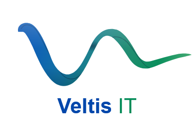

Systèmes
Windows Server et Linux, Active Directory et GPO, virtualisation. J'ai par exemple monté un serveur Debian avec Apache, MariaDB et GLPI.
- AD DS & GPO
- Debian
- Hyper-V / Proxmox

Thomas L.Je suis Thomas, étudiant en BTS SIO option réseaux à l'EFREI, en alternance comme technicien informatique. J'aime quand une infra est propre, documentée et que tout le monde peut la reprendre.
Je suis en première année de BTS SIO option SISR à l'EFREI. Je le fais en alternance dans une structure d'une centaine de postes, où je suis technicien informatique depuis 2025.
En ce moment je travaille surtout sur Microsoft Intune : la migration du parc de postes. J'ai aussi une petite activité de freelance pour aider des entreprises sur leur informatique.
Windows Server et Linux, Active Directory et GPO, virtualisation. J'ai par exemple monté un serveur Debian avec Apache, MariaDB et GLPI.
VLAN, routage, VPN, WiFi. Je sais lire un schéma réseau et chercher d'où vient une panne.
Pare-feu, MFA, moindre privilège, mails protégés avec SPF, DKIM et DMARC.
Aide aux utilisateurs, préparation des postes, comptes et accès, suivi des demandes par tickets.
Apache, PHP et MariaDB pour héberger un site ou un outil. Scripts PowerShell, Python et Bash pour les tâches répétitives.
Azure, Entra ID, Microsoft 365 et surtout Intune, que j'utilise tous les jours au travail.
Un serveur Debian avec un site web et l'outil de tickets GLPI, monté brique par brique. 8 tests sur 8 validés.
Voir la fiche En alternanceUn parc d'environ 100 postes qui passe sous Microsoft Intune : Autopilot, scripts PowerShell et procédures. En cours.
Lire le détail En alternanceDes écrans qui ne se synchronisaient plus après un changement de réseau. J'ai trouvé la cause : un pare-feu qui ne laissait passer que deux ports.
Lire le détailAujourd'hui je mène les trois en même temps : le BTS SIO à l'EFREI, mon alternance et mon activité de freelance.
Services informatiques aux organisations, option systèmes et réseaux.
ÉcoleAdministrateur systèmes et réseaux pour de petites entreprises, à côté du BTS et de l'alternance.
FreelanceAdministration cloud, gestion des postes et des mobiles.
FormationEn alternance pendant mon BTS, dans une structure d'une centaine de postes : postes, Intune, support aux utilisateurs.
AlternanceDans un grand groupe bancaire : postes, utilisateurs, réseau.
StageLe plus simple est de m'écrire par mail.